Escola e Faculdade Fortec

A Fortec possui quatro unidades educacionais e uma Central Administrativa que formam o Sistema Fortec de Ensino. Para administrá- lo garantindo absoluto controle do padrão de qualidade há uma equipe de profissionais da área administrativa e pedagógica com formação e competência em suas áreas de atuação.